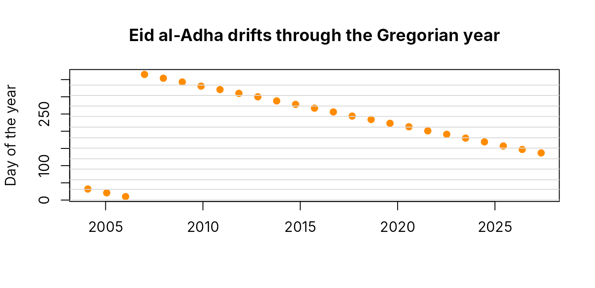

This vignette explains the ideas behind lunarcast: why moving holidays are hard to model, what the classical calendar variation model assumes, where those assumptions break down, and how the proposed model repairs them. The mathematics is kept to what is needed; every formula is followed by its meaning in words.
1. Holidays that move
The Gregorian year has about 365.24 days, the Islamic (Hijri) year about 354.37. Every Islamic holiday therefore comes about 10.9 days earlier each Gregorian year, and in monthly data it moves to the previous month roughly every 2.8 years. Lunisolar holidays such as the Chinese New Year and Easter also move, but within a band of about a month.
adha <- holiday_dates("idul_adha")
day <- as.numeric(format(adha, "%j"))
year <- as.numeric(format(adha, "%Y")) + day / 366
plot(year, day, pch = 19, col = "darkorange", xlab = "", ylab = "Day of the year",
main = "Eid al-Adha drifts through the Gregorian year")
abline(h = cumsum(c(0, 31, 28, 31, 30, 31, 30, 31, 31, 30, 31, 30)),
col = "grey85")
Each grey line is the start of a month. A point that crosses a line means the holiday has moved to another month, which is exactly what a monthly model has to cope with. In 2006 the holiday occurred twice (10 January and 31 December).
2. The classical calendar variation model
The usual approach is a regression with ARIMA errors with a dummy for the month that contains the holiday:
\[ Y_t = \underbrace{\beta_0 + \beta_1 t}_{\text{trend}} + \underbrace{S_t}_{\text{seasonality}} + \underbrace{\alpha V_t}_{\text{holiday}} + \underbrace{N_t}_{\text{ARIMA error}}, \qquad V_t = \begin{cases} 1 & \text{if month } t \text{ contains the holiday,}\\ 0 & \text{otherwise.} \end{cases} \]
The trend is either deterministic (the regressor \(\beta_1 t\)) or stochastic
(differencing in \(N_t\)). The
seasonality is a set of monthly dummies, Fourier terms \(\sum_{k=1}^{K}\{a_k \sin(2\pi k t/12) + b_k
\cos(2\pi k t/12)\}\), or a seasonal ARIMA error. Crossing the
two choices gives six structures, m1 to m6, available in
calvar_classic() and calvar_classic_all().
The holiday part makes three assumptions:
- Timing: the holiday affects the month that contains it, fully, and no other month.
- Stability: the effect \(\alpha\) is the same in every year.
- Additivity: the holiday adds \(\alpha\) units, whatever the level of the series.
3. Where the classical assumptions break
The sapi series (Google Trends interest in “cattle”,
which peaks before Eid al-Adha) shows all three problems.
Timing. Eid al-Adha fell on 31 July 2020, but the search peak was in August (79) rather than July (58): people search in the days before and after the holiday, and here most of those days were in August.
Stability. The size of the peak changed a lot. A simple descriptive measure is the highest month around the holiday divided by the median of the other months of the same year:
y <- as.numeric(sapi)
yr <- floor(time(sapi) + 1e-6)
hmon <- holiday_window(adha, c(-3, 7), sapi)[, 1] > 0 # months touched by the holiday
ratio <- tapply(seq_along(y), yr, function(i) max(y[i][hmon[i]]) / median(y[i][!hmon[i]]))
plot(as.numeric(names(ratio)), ratio, type = "b", pch = 19, xlab = "",
ylab = "Holiday month / median month", main = "The holiday effect changes over time")
abline(h = 1, lty = 3)The effect is almost absent in 2004 to 2006, grows to more than three times the usual level in 2014 to 2019 and is smaller afterwards. A single \(\alpha\) averages these years and is wrong for most of them.
Leakage into seasonality (“ghost peaks”). Whatever the holiday dummy does not explain stays in the residuals of the holiday month. A seasonal autoregression such as \(N_t = \Phi N_{t-12} + \varepsilon_t\) then predicts a part of that residual again twelve months later. When the holiday has moved to the previous month in the meantime, the model forecasts a peak in a month that no longer contains the holiday, and too small a peak in the month that does. Seasonal dummies suffer in the same way: they absorb part of the holiday effect into the “normal” level of the month.
4. Window regressors
lunarcast replaces the dummy by the share of a holiday window that falls in each month. For occurrence \(j\) of holiday \(h\) on date \(D_{hj}\), the window is \(W_{hj} = [D_{hj} + a_h,\ D_{hj} + b_h]\) and
\[ w_{hj,t} = \frac{|W_{hj} \cap P_t|}{|W_{hj}|}, \]
where \(P_t\) is the set of days in month \(t\). In words: count how many days of the window fall in month \(t\) and divide by the length of the window. The shares of an occurrence add up to one, and the window \((a_h, b_h) = (0, 0)\) gives back the classical dummy.
w <- holiday_window(adha, window = c(-3, 7), y = sapi)
window(w, start = c(2020, 6), end = c(2020, 9))
#> Jun Jul Aug Sep
#> 2020 0.0000000 0.3636364 0.6363636 0.0000000For 31 July 2020 the window runs from 28 July to 7 August: 4 of its
11 days are in July (share 0.36) and 7 in August (0.64). The window is
chosen automatically from a grid of days before and after the holiday by
AICc; for Eid al-Adha in sapi it is \((-3, +7)\), for Eid al-Fitr \((-28, +3)\), the last four weeks of
Ramadan.
5. Multiplicative effects
lunarcast models \(z_t = \log y_t\) by default, so a holiday multiplies the level by \(e^{\alpha}\) instead of adding a fixed number. This matters when the level of the series changes: three times a low level and three times a high level are very different numbers of searches.
When only a share \(w\) of the window falls in a month, the natural assumption is that a share \(w\) of the extra activity falls there, so the level of the month is multiplied by \(1 + (e^{\alpha} - 1)\,w\). On the log scale this is achieved with the regressor
\[ \tilde w = \frac{\log\{1 + (e^{\alpha} - 1)\,w\}}{\alpha}, \qquad \alpha\,\tilde w = \log\{1 + (e^{\alpha} - 1)\,w\}. \]
For example, if the full effect triples the level (\(e^{\alpha} = 3\)) and 64% of the window is
in August, August rises by \(1 + 2 \times 0.64
= 2.28\) times, not by \(3^{0.64} =
2.02\) times, which is what plugging \(w\) itself into a log model would give.
Because \(\tilde w\) depends on \(\alpha\), lunarcast estimates the model,
updates \(\tilde w\) and re-estimates
(two iterations are enough). With lambda = NULL the model
stays on the original scale and the shares are used directly.
6. Two-level holiday effects
To let the effect change over time, every occurrence gets its own effect.
Level 1 (estimation):
\[ z_t = \sum_h \sum_j \alpha_{hj}\,\tilde w_{hj,t} + \mathbf{x}_t^\top\boldsymbol\beta + N_t . \]
The occurrence effects \(\alpha_{hj}\) are estimated jointly with the trend, the seasonality and the ARIMA error by maximum likelihood. A constant effect is the special case \(\alpha_{hj} = \alpha_h\); lunarcast chooses between the two by AICc and requires at least six occurrences for a two-level effect.
Level 2 (forecasting the next effect). The effect of a future occurrence is not observed, so it is forecast from the sequence of past effects:
\[ \hat\alpha_{h,J+1} = g(\hat\alpha_{h1}, \ldots, \hat\alpha_{hJ}). \]
Five rules \(g\) are compared:
| Rule | Forecast of the next effect |
|---|---|
mean |
average of the last \(k\) effects |
wmean |
average of the last \(k\) effects weighted by \(1/\mathrm{se}^2\) (precise estimates count more) |
rw |
the last effect (random walk) |
ses |
simple exponential smoothing of the effects |
holt |
damped Holt (a damped trend in the effects) |
Each rule forecasts every past effect from the effects before it, and the rule with the smallest mean squared one-step error is used:
\[ \mathrm{CV}(g) = \frac{1}{|\mathcal J|}\sum_{j \in \mathcal J} \big\{\hat\alpha_{hj} - g(\hat\alpha_{h1}, \ldots, \hat\alpha_{h,j-1})\big\}^2 . \]
The same error measures how uncertain the next effect is, and it is
added to the forecast variance (Section 9). plot() on a
fitted model shows the estimated effects and the forecast for the next
occurrence.
7. Trend and seasonal structure
The rest of the model, \(\mathbf{x}_t^\top\boldsymbol\beta + N_t\), uses the same building blocks as the classical model: a deterministic or stochastic trend and no seasonality, Fourier terms, seasonal dummies or seasonal ARIMA errors. Three design choices matter.
- Dummies are Fourier terms. With \(K = s/2\) (six for monthly data) the Fourier terms span exactly the same space as \(s - 1\) seasonal dummies, so the dummy and Fourier models are nested. This is why m1 and m2 (or m3 and m4) of the classical approach give almost the same fit with \(K = 5\).
-
The calendar comes first. The windows and effect
types are selected before the seasonal structure. With a poor calendar
component, a seasonal ARMA error absorbs the holiday misfit and looks
far better than it is: in
sapi, the advantage of seasonal ARMA errors over the best deterministic seasonality falls from 67 AICc points with a dummy calendar to 14 with the selected calendar. -
Cross-validation, not AICc, chooses the structure.
Information criteria cannot compare models with different orders of
differencing, and a good in-sample fit is not a good forecast. lunarcast
refits every candidate structure at the end of each of the last
cv_yearsyears (five by default), forecasts the next year with the full calendar machinery and computes the RMSE. By default it applies the one-standard-error rule: among the structures whose cross-validated RMSE is within one standard error of the best, it takes the simplest,
\[ c^\ast = \arg\min_c \{\kappa_c : \mathrm{CV}_c \le \mathrm{CV}_{\min} + \mathrm{SE}_{\min}\}, \]
where \(\kappa_c\) counts the structural parameters (trend slope, Fourier or dummy columns, seasonal ARMA terms). Simple structures are less likely to repeat last year’s anomalies.
8. Outliers
With outliers = TRUE, lunarcast looks for additive
outliers (\(\omega\,I(t = \tau)\)),
level shifts (\(\omega\,I(t \ge
\tau)\)) and temporary changes (\(\omega\,0.7^{t-\tau} I(t \ge \tau)\)) among
the largest robustly standardised residuals, and keeps them while \(|t| > 3.5\). Months covered by a
two-level holiday are excluded, because an outlier there would be
indistinguishable from that year’s holiday effect.
9. Forecasting
Future holiday regressors are built from the holiday dates. Past occurrences keep their estimated effects (this matters when a forecast starts in the middle of a holiday window), and new occurrences receive the level-2 forecast \(\hat\alpha_{h,J+1}\). The point forecast is \(\hat y_{T+\ell} = \exp(\hat z_{T+\ell})\), which is the median of the forecast distribution, and the forecast variance on the log scale is
\[ \mathrm{Var}(\hat z_{T+\ell}) = \sigma^2_{\ell} + \sum_{m} m\,\widehat{\mathrm{MSE}}_g\,\tilde w_{h,J+m,T+\ell}^2, \]
the ARIMA variance plus the uncertainty of the effect of each new
occurrence \(m\) in that month.
Scenarios fix the next effect instead of forecasting it, for example
forecast(fit, level2 = list(adha = log(2))) for an Eid
al-Adha that doubles the level.
10. The classical model is a special case
lunarcast reduces exactly to the classical model when
- the series is modelled on its original scale
(
lambda = NULL), - the window is the holiday month itself
(
window = c(0, 0)), - the effect is constant (
effect = "constant"), - only one holiday is used, and
- the trend and seasonal structure are fixed.
Every difference between the two models is therefore a choice that lunarcast makes from the data instead of assuming it.
11. The algorithm in one list
lunarcast() runs these steps:
- Choose a preliminary trend type with KPSS tests on the series adjusted for a simple calendar.
- For every holiday, choose a constant or two-level effect by AICc.
- For every holiday, choose the window \((a_h, b_h)\) on a grid by AICc.
- Optionally, detect outliers outside the two-level holiday periods.
- Choose the trend and seasonal structure by calendar-aware cross-validation with the one-standard-error rule.
- Fit the final model by maximum likelihood, with the ARIMA order
chosen by
auto.arima()and the window shares mapped to the log scale. - Choose the level-2 rule for every two-level holiday.
References
Bell, W. R. and Hillmer, S. C. (1983). Modeling time series with calendar variation. Journal of the American Statistical Association, 78(383), 526–534.
Bergmeir, C., Hyndman, R. J. and Koo, B. (2018). A note on the validity of cross-validation for evaluating autoregressive time series prediction. Computational Statistics & Data Analysis, 120, 70–83.
Chen, C. and Liu, L.-M. (1993). Joint estimation of model parameters and outlier effects in time series. Journal of the American Statistical Association, 88(421), 284–297.
Hastie, T., Tibshirani, R. and Friedman, J. (2009). The Elements of Statistical Learning (2nd ed.). Springer.
Hyndman, R. J. and Khandakar, Y. (2008). Automatic time series forecasting: the forecast package for R. Journal of Statistical Software, 27(3).